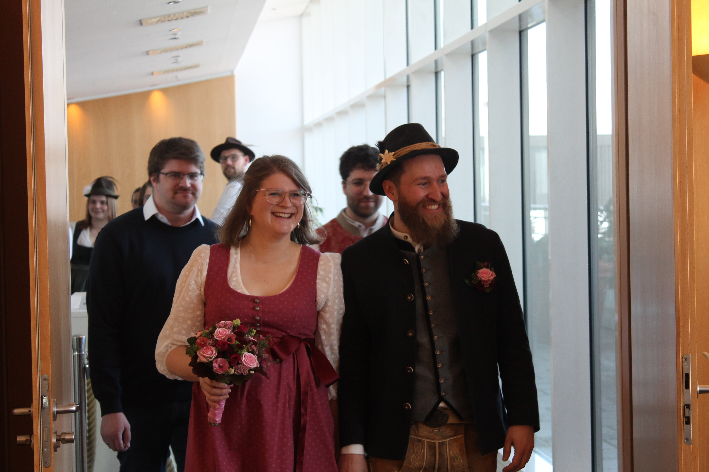
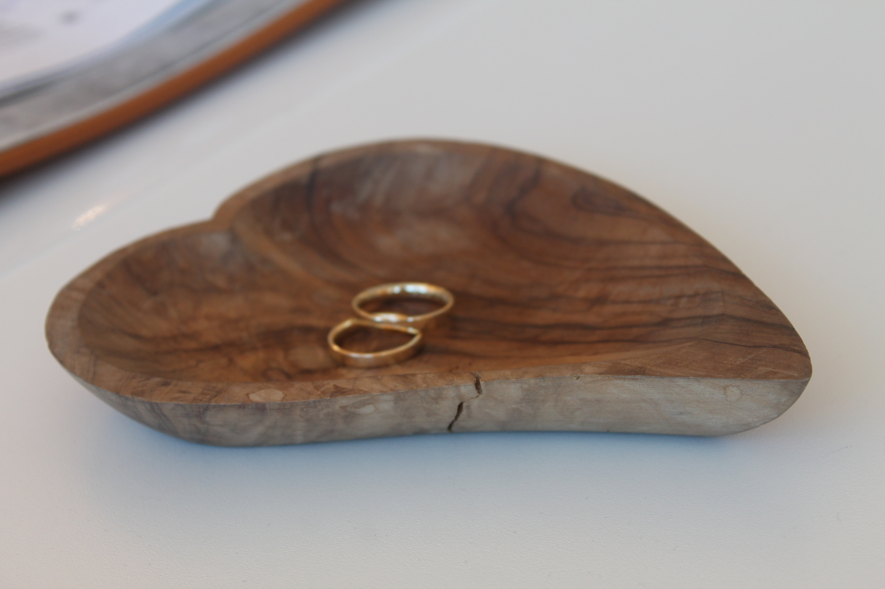
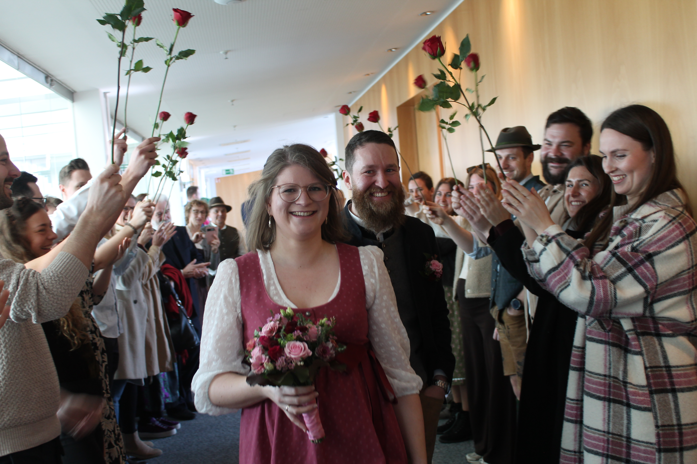

06. März 2027
Im Anschluss: Sektempfang mit geschmeidiger Tanzlmusi an der Kirche
Kaffee & Kuchen
Abendessen & Tanz
Bitte gebt uns bis spätestens 30.11.2026 Bescheid, ob ihr kommt.
Stefan, Katha und Regina, Telefonnummern auf der Einladung oder auf Nachfrage.
Damit sich Josef bis ans Ende seines Lebens anhören kann, dass Magdalena nicht nur nach Schwaben ziehen muss, sondern auch dort heiraten musste.
Entgegen populärer Annahmen ist es durchaus möglich, unsere Hochzeit nicht in Tracht zu besuchen - Ziehts an was ihr wollts, solangs net zu g’schlampert is!
Bitte kreuzt bei der Anmeldung an dass ihr eine Übernachtungsgelegenheit braucht - wir versuchen uns koordiniert darum zu kümmern und melden uns!
Das merkt ihr wenn ihr in Flammen aufgeht, sobald ihr den Kirchenboden betretet.
Vorspeise und Hauptspeise. Der Rest bleibt noch eine Überraschung. Nach der Kirche ist eine deftige Kleinigkeit geplant.


